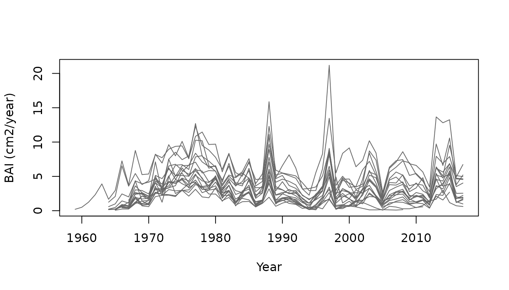
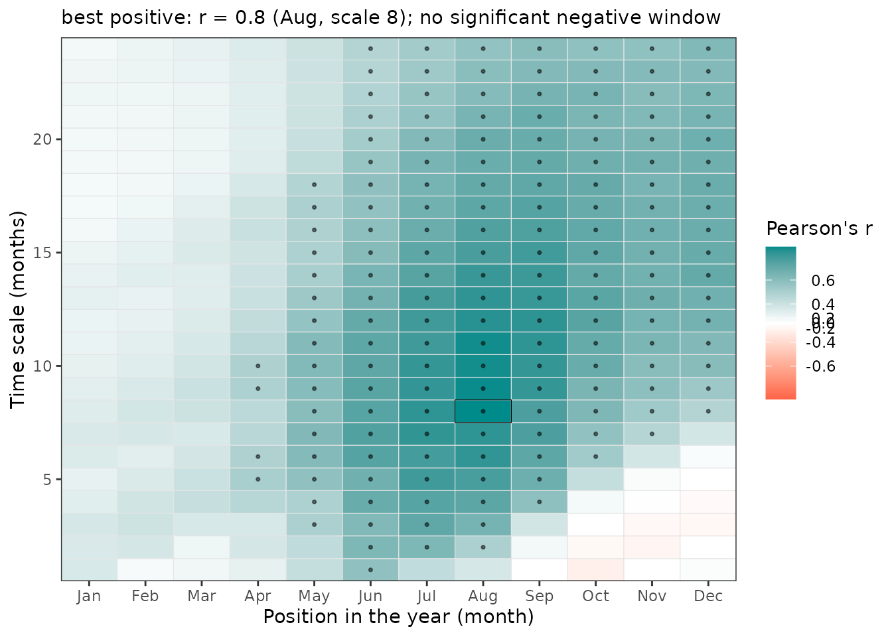
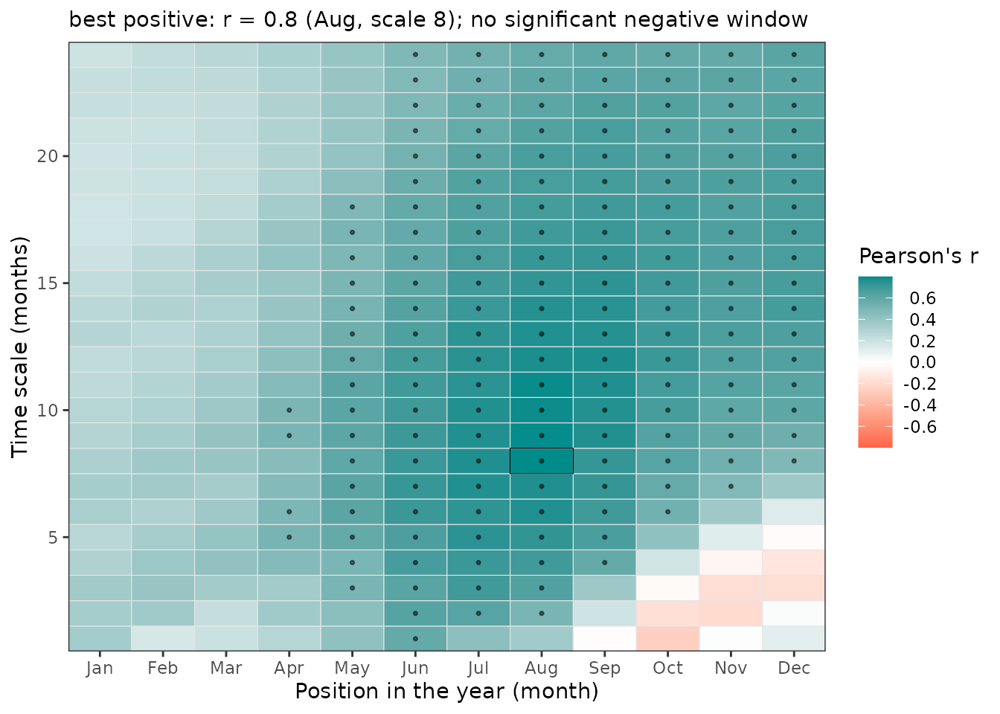
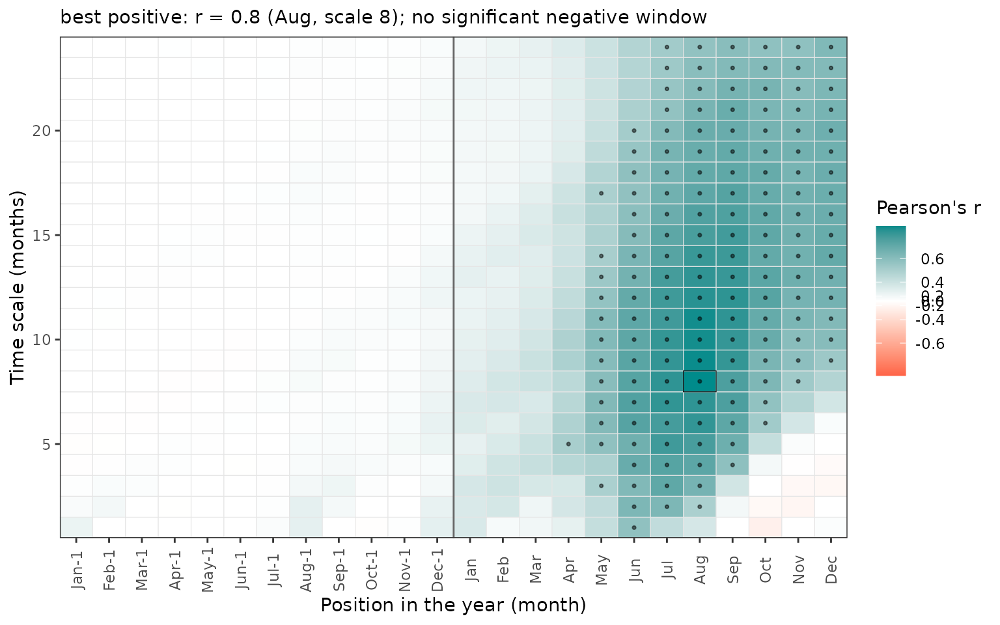
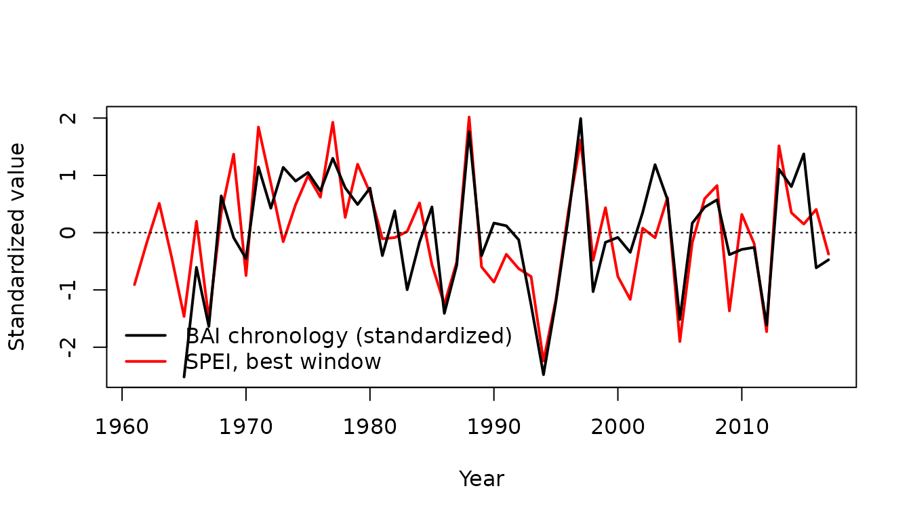
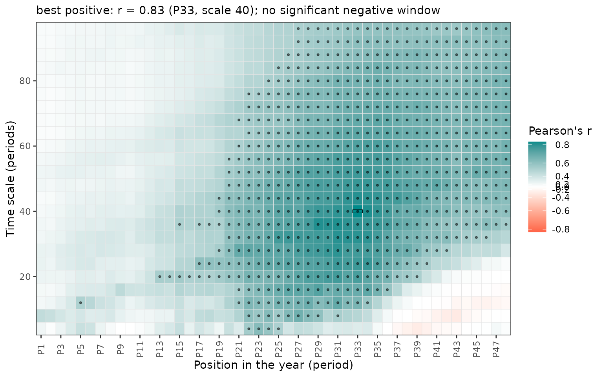

Relating the index to annual series: finding the best time scale
S. Beguería
Source:vignettes/scale_scan.Rmd
scale_scan.RmdMany variables observed once a year depend on drought. Tree-ring widths, crop yields, the annual flow of a river or the level of a reservoir at the end of the summer are examples. Each of them responds to the water balance of a particular part of the year, accumulated over a particular length of time. A crop may depend on the rain of the three months before harvest. A reservoir may integrate the water balance of a whole year.
The SPEI and the SPI can be computed at many time scales. The value
of the index in a given month at a time scale of s months
summarizes the water balance of the s months ending in that
month. So the index at a month and a time scale defines a window of
time. Correlating the annual series with the index in every month and at
every time scale shows which window the series responds to most. The
function scale_scan() does this, and
scale_extract() gives the index series of the chosen
window.
This approach has been used to relate the SPEI and the SPI to tree-ring growth across a climatic gradient (Pasho et al., 2011), to map the time scales at which vegetation responds to drought across the world’s biomes (Vicente-Serrano et al., 2013), and to study how thinning changes the sensitivity of tree growth to hydric and thermal stress in four widely planted pine species (Manrique-Alba et al., 2025).
The data
The tarazona dataset has the growth of Aleppo pines
(Pinus halepensis) in a plantation at Tarazona, in the Ebro
valley (Spain, 785 m a.s.l.), and the climate of the site. The trees are
in the control plot of a thinning experiment, which was not thinned
(Manrique-Alba et al., 2020). Growth is measured as the basal area
increment (BAI, in cm² per year) of 18 cores from 11 trees, from 1959 to
2017. The climate comes from the gridded dataset of the Spanish drought
monitor (Vicente-Serrano et al., 2017), and has 48 periods per year
(four per month) from 1961 to 2020. See ?Datasets for the
details.
library(SPEI)
data(tarazona)
names(tarazona)
#> [1] "site" "bai" "clim"
bai <- tarazona$bai
clim <- tarazona$climMost of this vignette uses monthly data. The precipitation and the reference evapotranspiration (ETo) are totals per period, so the monthly values are the sums of each group of four periods. The water balance is the precipitation minus the ETo:
to_monthly <- function(x) {
ts(colSums(matrix(x, nrow = 4)), start = c(1961, 1), frequency = 12)
}
bal <- to_monthly(clim[, "PRCP"]) - to_monthly(clim[, "ETO"])The original 48-period data are used at the end of this vignette (see
‘Other frequencies’) and in vignette("weekly").
The annual series
The annual series must contain only the signal that we want to relate to drought. Other sources of variation over time should be removed first. Crop yields usually grow over the years because of better varieties and management. Tree-ring widths get narrower as the tree grows. The BAI of a young tree grows with its size, and then levels off or declines. These trends are not related to drought, but they add variance to the series, and they can create spurious correlations with any index that also has a trend.
The BAI of the cores shows these trends, and large differences in growth rate between cores:
matplot(bai$year, bai[, -1],
type = "l", lty = 1, col = "grey40",
xlab = "Year", ylab = "BAI (cm2/year)"
)
In dendrochronology the trend is removed from each series before the series are averaged. The cores start in different years, so removing the trend after averaging would mix the trends of cores of different ages. Here we log-transform each core and subtract a smoothing spline with four degrees of freedom. The log makes the variance of the series more similar between cores and over time, and the difference of logs is the log of the ratio between the BAI and its trend. Each core becomes a series of relative growth around zero:
# log(BAI) minus a smoothing spline fitted to log(BAI), for one core
detrend_core <- function(x, year, df = 4) {
ok <- !is.na(x)
fit <- smooth.spline(year[ok], log(x[ok]), df = df)
x[ok] <- log(x[ok]) - predict(fit, year[ok])$y
x
}
rbai <- sapply(bai[, -1], detrend_core, year = bai$year)
rbai <- ts(rbai, start = bai$year[1], frequency = 1)A flexible spline also removes part of the slow variation that is due
to climate, such as a dry decade. Stiffer curves keep more of it. Other
methods (e.g. negative exponential curves, or the ones in the
dplR package) can be used in the same way. Whatever the
method, detrend the series before calling scale_scan(). The
argument detrend = TRUE only removes a linear trend from
the averaged series, which is enough for simpler cases such as a crop
yield that grows steadily over the years.
The average of the detrended cores in each year is the chronology of the site:
chron <- ts(rowMeans(rbai, na.rm = TRUE), start = bai$year[1])
plot(chron, xlab = "Year", ylab = "Detrended BAI (log ratio)")
abline(h = 0, lty = 3)The number of cores per year is low at the start. Until 1963 the chronology rests on a single core, and its variability in those years is larger than later on. All 18 cores are present from 1967. A mean of very few series is not representative of the site, so we restrict the analysis to the years with at least 10 cores, from 1965 on:
first <- min(bai$year[depth >= 10])
rbai <- window(rbai, start = first)
chron <- window(chron, start = first)The annual series is a time series with frequency 1, or a data frame with the years in the first column and the values in the other columns.
Running the scan
scale_scan() takes the water balance, computes the SPEI
at the time scales in scales, and correlates the annual
series with the index in each month and at each time scale. Here the
annual series has one column per core. All the values of each year are
averaged (see ‘Several annual series’):
sc <- scale_scan(bal, rbai, scales = 1:24)
sc
#> Correlation scan of an annual series with the SPEI
#> Positions in the year: 12 (months)
#> Time scales: 1, 2, 3, 4, 5, 6, 7, 8, 9, 10, 11, 12, 13, 14, 15, 16, 17, 18, 19, 20, 21, 22, 23, 24
#> Years of the annual series: 1965-2017
#> Values averaged per year: 11 to 18
#> Correlation: pearson; p-value adjustment: holm; alpha = 0.05
#> Significant cells: 165 of 288
#>
#> Best windows:
#> sign lag cycle label scale r p p.adj n
#> positive 0 8 Aug 8 0.798 8.19e-13 2.36e-10 53
#> negative NA NA <NA> NA NA NA NA NAThe best window is August at a time scale of 8 months, i.e. the water balance from January to August. Its correlation with the chronology is r = 0.8 over 53 years. There is no significant negative window. Growth is larger in the years in which this part of the year is wetter than usual.
Each window is defined by a month and a time scale. The SPEI of a
month at a time scale of s months summarizes the water
balance accumulated over the s months that end in that
month. So the SPEI of August at 8 months measures whether the period
from January to August of each year was wetter or drier than usual, and
its value is known at the end of August. For the tree, the result means
that the width of each ring depends on the water accumulated from the
start of the year to the end of the summer, which includes the soil
water recharged in winter and the water available during the growing
season. In the same month, shorter or longer windows correlate less: r =
0.36 for that month alone (time scale 1) and r = 0.77 for the whole year
to August (time scale 12).
For comparison, the average of the raw BAI with a linear trend
removed (detrend = TRUE) gives:
raw <- window(ts(bai[, -1], start = bai$year[1]), start = first)
sc_raw <- scale_scan(bal, raw, scales = 1:24, detrend = TRUE)
sc_raw$best[1, ]
#> sign lag cycle label scale r p p.adj n
#> 1 positive 0 8 Aug 9 0.745223 1.554838e-10 4.477933e-08 53The window is very similar (August, 9 months), with a slightly lower correlation (r = 0.75). Here the simple approach gives almost the same result, because most cores are mature and the year-to-year variation is large. This will not hold in general, for example with young trees or with cores of very different ages.
Reading the heatmap
The plot method draws the correlations as a heatmap. The
months are on the horizontal axis and the time scales on the vertical
axis. The dots mark the cells that are significant after adjusting for
multiple testing, and the black outline shows the best window:
plot(sc)
The correlations are highest from June to September, at time scales
of about 6 to 12 months. In other words, growth depends on the water
balance accumulated from the previous autumn or winter to the end of the
summer. With sig = "mask" the non-significant cells are
left blank.
By default the colours are proportional to the squared correlation,
with its sign (colour = "r2"). This spreads the colours
over the high correlations, which are the ones of interest, while the
legend still shows the correlation. With colour = "r" the
colours are proportional to the correlation itself:
plot(sc, colour = "r")
The results are kept in the object. sc$cor holds the
correlations, with one row per month and one column per time scale.
sc$p and sc$p.adj hold the p-values before and
after the adjustment, and sc$n the number of years used in
each cell.
The best windows and multiple testing
The best windows are the cells with the highest and the lowest correlation, among those that are significant:
sc$best
#> sign lag cycle label scale r p p.adj n
#> 1 positive 0 8 Aug 8 0.7981936 8.194739e-13 2.360085e-10 53
#> 2 negative NA NA <NA> NA NA NA NA NAThe scan above tests 288 cells. With so many tests, some cells will
have a low p-value by chance. At a 5% level, about 14 of 288 cells would
be ‘significant’ with an annual series of pure noise. For this reason
the p-values are adjusted for multiple testing, across all the cells.
The default method, Holm’s, keeps the probability of any false positive
among all the cells below alpha. Other methods can be
chosen with p.adjust (see ?p.adjust).
To see the effect of the adjustment we scan a synthetic annual series of pure noise, which has no relation to the climate:
set.seed(1)
noise <- ts(rnorm(57), start = 1961)
sc_none <- scale_scan(bal, noise, scales = 1:24, p.adjust = "none")
sum(sc_none$p.adj <= 0.05, na.rm = TRUE)
#> [1] 7
sc_holm <- scale_scan(bal, noise, scales = 1:24)
sum(sc_holm$p.adj <= 0.05, na.rm = TRUE)
#> [1] 0Without the adjustment 7 cells are significant, and the best of them would be reported as the best window. With the adjustment 0 are. The Tarazona chronology has a strong signal, and many cells remain significant after the adjustment (165 of 288).
The adjustment is conservative, because neighbouring cells share most
of their data. With short series it may leave no significant cell even
when there is a real signal. The unadjusted p-values are always in
sc$p.
Conditions of the previous year
Some annual series also depend on the conditions of the previous
year. Tree growth, for example, often depends on the water stored at the
end of the previous growing season. Time scales longer than the month
reach into the previous year (a time scale of 12 in March covers April
of the previous year to March), but they always include the months of
the current year too. The argument lag scans the months of
previous years directly: lag = 0:1 correlates the annual
series of year Y with the index of year Y and of year Y-1.
sc_lag <- scale_scan(bal, rbai, scales = 1:24, lag = 0:1)
sc_lag$best
#> sign lag cycle label scale r p p.adj n
#> 1 positive 0 8 Aug 8 0.7981936 8.194739e-13 4.72017e-10 53
#> 2 negative NA NA <NA> NA NA NA NA NA
plot(sc_lag)
The rows are now in chronological order. Jan-1 to
Dec-1 are the months of the previous year, and
Jan to Dec those of the current year. The best
window is the same as before, in the current year. In the months of the
previous year, the largest correlation (in absolute value) is 0.28, and
no cell is significant (smallest adjusted p-value 1). So at this site
the water balance of the previous year matters only through the long
time scales of the current year, which reach into it. The
lag column of best gives the year. The
adjustment of the p-values covers all the cells, so the scan with
lag = 0:1 is stricter than one with
lag = 0.
Extracting the series of a window
scale_extract() returns the annual series of the index
for a window, by default the best positive one. It is aligned with the
annual series: for a window with a lag of one year, the value of year Y
is the index of year Y-1.
spei_best <- scale_extract(sc)
window(spei_best, end = 1970)
#> Time Series:
#> Start = 1961
#> End = 1970
#> Frequency = 1
#> [1] -0.9076176 -0.1689016 0.5111117 -0.4317334 -1.4632517 0.1971797
#> [7] -1.5046303 0.3475170 1.3698983 -0.7486864The series covers all the years of the climate data (here 1961 to
2020), so it does not span the same years as the annual series. Use
ts.intersect() to align them by year before using them
together in other models. Note that lm() does not align
time series by itself.
d <- ts.intersect(chron, spei_best)
fit <- lm(chron ~ spei_best, data = d)
summary(fit)$r.squared
#> [1] 0.637113Plotting the two series together shows how closely the index of the best window follows the annual series. They are in different units, so here the chronology is standardized (mean 0, standard deviation 1) to plot it on the scale of the index:
chron_std <- (chron - mean(chron)) / sd(chron)
spei_plot <- window(spei_best, end = 2017)
plot(spei_plot,
type = "l", col = "red", lwd = 2,
ylim = range(c(spei_plot, chron_std), na.rm = TRUE),
xlab = "Year", ylab = "Standardized value"
)
lines(chron_std, col = "black", lwd = 2)
abline(h = 0, lty = 3)
legend("bottomleft", c("BAI chronology (standardized)", "SPEI, best window"),
col = c("black", "red"), lwd = 2, bty = "n"
)
Any other window can be extracted by giving cycle,
scale and lag:
spei_jun3 <- scale_extract(sc, cycle = 6, scale = 3, lag = 0)The correlation of the best window is chosen as the highest of many. It is biased upwards, so the strength of the relationship should be checked with independent data when possible.
Options of the index
Options for spei() can be passed through
scale_scan(), for example a reference period or a kernel.
With index = "spi" the SPI is computed instead, from a
precipitation series.
prcp <- to_monthly(clim[, "PRCP"])
sc_spi <- scale_scan(prcp, rbai,
scales = 1:24, index = "spi",
distribution = "PearsonIII"
)
sc_spi$best
#> sign lag cycle label scale r p p.adj n
#> 1 positive 0 8 Aug 8 0.7898762 2.0595e-12 5.93136e-10 53
#> 2 negative NA NA <NA> NA NA NA NA NAThe SPI gives the same window, with a correlation of 0.79. At this site the variation of the water balance between years comes mostly from the precipitation.
The index can also be computed beforehand and passed with
index = "precomputed", as a time series with one column per
time scale. The time scales are taken from the column names, or given in
scales:
idx <- sapply(c(1, 3, 6, 12), function(s) {
spei(bal, s, verbose = FALSE)$fitted
})
idx <- ts(idx, start = c(1961, 1), frequency = 12)
colnames(idx) <- c("SPEI-1", "SPEI-3", "SPEI-6", "SPEI-12")
sc_pre <- scale_scan(idx, rbai, index = "precomputed")
sc_pre$best
#> sign lag cycle label scale r p p.adj n
#> 1 positive 0 8 Aug 12 0.7731425 1.167024e-11 5.601717e-10 53
#> 2 negative NA NA <NA> NA NA NA NA NAWith only these four time scales, the best window is August at 12 months.
This is useful to scan an index computed elsewhere, or a set of time scales computed once and used for several annual series.
Other frequencies
The scan is not limited to monthly data. The position of each value
in the year comes from the frequency of the time series. Weekly data
(frequency 52) give one row per week, labelled W1 to
W52. Other frequencies give one row per period, labelled
P1, P2, etc. The time scales are then in
periods.
The original analysis of these data used the 48 periods per year of the Spanish drought monitor (Manrique-Alba et al., 2025). We scan time scales from 4 to 96 periods (1 to 24 months) in steps of 4:
bal48 <- clim[, "PRCP"] - clim[, "ETO"]
sc48 <- scale_scan(bal48, rbai, scales = seq(4, 96, by = 4))
sc48$best
#> sign lag cycle label scale r p p.adj n
#> 1 positive 0 33 P33 40 0.8252678 2.951287e-14 3.399883e-11 53
#> 2 negative NA NA <NA> NA NA NA NA NAThe best window ends in period 33, the first quarter of September, and has a time scale of 40 periods (10 months), with r = 0.83. The monthly scan found a window of 8 months ending in August. The heatmap shows that many neighbouring cells have almost the same correlation, so the exact position and length of the best window are not well determined. Manrique-Alba et al. (2025) used period 34 and a time scale of 12 months for this site, with a different model that included the thinned plots.
plot(sc48)
See vignette("weekly") for how to compute the indices
with weekly and other non-monthly data.
Several annual series
Often there are several series for the same site, such as several trees, or several fields of the same crop. There are two ways to analyse them.
The first one is to average them into a single series, and scan it
once. This is what we did above. y can be a time series
with one column per series, a data frame with the years in the first
column and one column per series, or a data frame with repeated years
(one row per year and series). All the values of each year are averaged.
y.count keeps the number of values in each year. The long
format gives the same result as the matrix:
long <- data.frame(
year = rep(as.numeric(time(rbai)), ncol(rbai)),
bai = as.vector(rbai)
)
head(long[!is.na(long$bai), ])
#> year bai
#> 1 1965 -0.5839508
#> 2 1966 0.4850719
#> 3 1967 -0.1933830
#> 4 1968 0.1507774
#> 5 1969 -0.2699340
#> 6 1970 -0.1973903
scale_scan(bal, long, scales = 1:24)$best[1, ]
#> sign lag cycle label scale r p p.adj n
#> 1 positive 0 8 Aug 8 0.7981936 8.194739e-13 2.360085e-10 53The second one is to scan each series on its own:
per_core <- lapply(colnames(rbai), function(core) {
scale_scan(bal, rbai[, core], scales = 1:24)$best[1, ]
})
per_core <- do.call(rbind, per_core)
per_core$r <- round(per_core$r, 2)
per_core$p.adj <- signif(per_core$p.adj, 2)
cbind(core = colnames(rbai), per_core[, c("label", "scale", "r", "p.adj")])
#> core label scale r p.adj
#> 1 TAPHD06A Aug 11 0.76 1.6e-08
#> 2 TAPHD06B Aug 11 0.76 1.6e-08
#> 3 TAPHD10A Aug 9 0.72 9.8e-07
#> 4 TAPHD10B Aug 8 0.68 1.4e-05
#> 5 TAPHD15A Aug 11 0.68 1.3e-05
#> 6 TAPHD15B Aug 11 0.75 5.4e-08
#> 7 TAPHD25A Aug 8 0.81 2.3e-10
#> 8 TAPHD31A Oct 19 0.59 1.5e-03
#> 9 TAPHD31B Aug 7 0.64 1.1e-04
#> 10 TAPHD35A Jul 2 0.57 1.7e-02
#> 11 TAPHD45A Aug 9 0.65 3.5e-04
#> 12 TAPHD53A Aug 10 0.80 1.2e-10
#> 13 TAPHD53B Aug 10 0.80 2.0e-10
#> 14 TAPHD55A Aug 8 0.76 1.0e-08
#> 15 TAPHD55B Aug 8 0.73 1.3e-07
#> 16 TAPHD59A Dec 15 0.74 8.1e-08
#> 17 TAPHD79A Aug 8 0.65 4.3e-05
#> 18 TAPHD79B Aug 9 0.66 1.9e-05Most cores (15 of 18) have their best window in August, but with time scales from 2 to 19 months, and correlations from 0.57 to 0.81. The average has a stronger signal than all but 1 of the single cores, because the individual noise cancels out. This is the standard way of building tree-ring chronologies. But averaging is only valid if all the series share the same climate data and respond to it in a similar way. It also hides any difference between sites or individuals. If the series are on different scales, standardize them before averaging. Here the detrending already puts all the cores on the same scale.
Scanning each series gives a window for each one, so it can reveal different responses, and each series can have its own climate data. But each scan has more noise, and there are more tests in total.
References
Manrique-Alba, À., Beguería, S., Camarero, J.J., Molina, A.J., Barberá, G.G., Blanco, J.A., Cachinero-Vivar, A.M., Castillo, V.M., del Campo, A.D., Hernández, Á., Imbert, J.B., Jiménez, M.N., Lo, Y.-H., Lucas-Borja, M.E., Moreno, G., Navarro, F.B., Navarro-Cerrillo, R.M., Ripoll, M.Á., Sánchez-Miranda, Á. (2025). Adaptive responses to thinning: growth and sensitivity to hydric and thermal stress in four widely planted pine species. Agricultural and Forest Meteorology, 373, 110777. https://doi.org/10.1016/j.agrformet.2025.110777
Manrique-Alba, À., Beguería, S., Molina, A.J., González-Sanchis, M., Tomàs-Burguera, M., del Campo, A.D., Colangelo, M., Camarero, J.J. (2020). Long-term thinning effects on tree growth, drought response and water use efficiency at two Aleppo pine plantations in Spain. Science of the Total Environment, 728, 138536. https://doi.org/10.1016/j.scitotenv.2020.138536
Pasho, E., Camarero, J.J., de Luis, M., Vicente-Serrano, S.M. (2011). Impacts of drought at different time scales on forest growth across a wide climatic gradient in north-eastern Spain. Agricultural and Forest Meteorology, 151(12), 1800–1811. https://doi.org/10.1016/j.agrformet.2011.07.018
Vicente-Serrano, S.M., Gouveia, C., Camarero, J.J., Beguería, S., Trigo, R., López-Moreno, J.I., Azorín-Molina, C., Pasho, E., Lorenzo-Lacruz, J., Revuelto, J., Morán-Tejeda, E., Sanchez-Lorenzo, A. (2013). Response of vegetation to drought time-scales across global land biomes. Proceedings of the National Academy of Sciences, 110(1), 52–57. https://doi.org/10.1073/pnas.1207068110
Vicente-Serrano, S.M., Tomas-Burguera, M., Beguería, S., Reig, F., Latorre, B., Peña-Gallardo, M., Luna, M.Y., Morata, A., González-Hidalgo, J.C. (2017). A high resolution dataset of drought indices for Spain. Data, 2(3), 22. https://doi.org/10.3390/data2030022. Data available from the Spanish drought monitor, https://monitordesequia.csic.es.